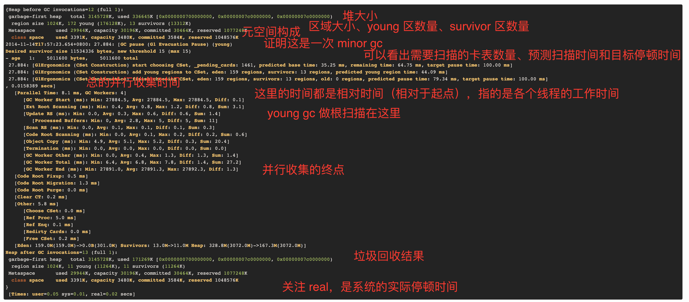

所有的垃圾收集器，都基于弱分代假设。实际的垃圾回收效率取决于堆内对象的分布状况。垃圾回收并不能解决内存泄漏或者应用程序逻辑的不良分配习惯问题，要处理 JVM 内存回收问题的根本方法是对程序进行调优：
- 减少临时对象，尽量复用内存
- 使用对象池
- 主动提前释放对象
- 主动 gc
其他情况，可以通过 tuning garbage collector 来解决。
CMS
CMS 的垃圾收集器默认在新生代就使用 ParNew，ParNew 天然是个 STW 收集器。
ParNew 使用标记-复制算法。标记-复制算法可以分为三个阶段：
- 标记阶段，即从GC Roots集合开始，标记活跃对象；
- 转移阶段，即把活跃对象复制到新的内存地址上；
- 重定位阶段，因为转移导致对象的地址发生了变化，在重定位阶段，所有指向对象旧地址的指针都要调整到对象新的地址上。
CMS 是个并发收集器。其操作步骤包括：
- 初始标记
- 并发标记
- 再标记
- 并发收集
G1
老的垃圾收集器总是面临几个问题：
- 所有针对老年代的操作必须扫描整个老年代空间；
- 年轻地和老年代是独立的连续的内存块，必须先决定年轻代和老年代在虚拟地址空间的位置。
G1是一种服务端应用使用的垃圾收集器，目标是用在多核、大内存的机器上，它在大多数情况下可以实现指定的GC暂停时间（因为它引入了更好的停顿预测模型），同时还能保持较高的吞吐量。
G1的缺点是：停顿预测模型还不够智能；即使使用了 pre-write barrier 和 post-write barrier 并发标记的准确度不够高，所以需要重标记，甚至依然有 concurrent mode 失败的场景。

关于 gc 日志可以参考《Understanding G1 GC Log Format》。
minor gc 的日志参考：

从这个图我们也可以看出，如果让 g1 自己选择 region 里面新老分布的比例的话，young 会多小（在一个 4g 的堆上，可能只有 200m 的年轻代）。如果 gc 时间不到 10ms，real 都显示不出来。
global concurrent marking 的日志参考：

现实中的 Concurrent Cycles 往往会执行一轮又一轮，直到内存空间的比例降到足够低的水位为止。
搜索 GC pause 可以看到各种各样的 gc 停顿。要找混合垃圾回收直接搜“mixed GCs”或者“(G1 Evacuation Pause) (mixed)”。
一般的 gc 日志的顺序是“[GC pause (G1 Evacuation Pause) (young)” -> “concurrent-root-region-scan-start” -> “Concurrent Cycles” -> “ [GC pause (G1 Evacuation Pause) (young)” -> “[G1Ergonomics (Mixed GCs) start mixed GCs” ->“(G1 Evacuation Pause) (mixed)”（这一步会循环执行）。
每次 gc 开始时，Heap before GC invocations=15872 (full 0)，其中invocations=15872是自JVM启动以来，执行GC的次数。每一次 initial-mark，这个值就会加 1。
常用的 jvm 配置：1
CommandLine flags: -XX:+AlwaysPreTouch -XX:CICompilerCount=4 -XX:ErrorFile=/var/company/logs/com.company.application/vmerr.log.20200928 -XX:G1HeapRegionSize=4194304 -XX:GCLogFileSize=10485760 -XX:+HeapDumpOnOutOfMemoryError -XX:HeapDum pPath=/var/company/logs/com.company.application/heaperr.log.20200928 -XX:InitialHeapSize=4294967296 -XX:Init iatingHeapOccupancyPercent=40 -XX:MaxGCPauseMillis=100 -XX:MaxHeapSize=4294967296 -XX:MaxMetaspaceSize=536870912 -XX:MetaspaceS ize=536870912 -XX:NumberOfGCLogFiles=10 -XX:+PrintAdaptiveSizePolicy -XX:+PrintFlagsFinal -XX:+PrintGC -XX:+PrintGCApplicationS toppedTime -XX:+PrintGCDateStamps -XX:+PrintGCDetails -XX:+PrintGCTimeStamps -XX:+PrintHeapAtGC -XX:+PrintStringTableStatistics -XX:+PrintTenuringDistribution -XX:ThreadStackSize=512 -XX:+TieredCompilation -XX:-UseBiasedLocking -XX:+UseCompressedClassPoi nters -XX:+UseCompressedOops -XX:+UseG1GC -XX:-UseGCLogFileRotation
参考：
ZGC
ZGC（The Z Garbage Collector）是JDK 11中推出的一款低延迟垃圾回收器，它的设计目标包括：
- 停顿时间不超过10ms；
- 停顿时间不会随着堆的大小，或者活跃对象的大小而增加；
- 支持8MB~4TB级别的堆（未来支持16TB）。
与CMS中的ParNew和G1类似，ZGC也采用标记-复制算法，不过ZGC对该算法做了重大改进：ZGC在标记、转移和重定位阶段几乎都是并发的，这是ZGC实现停顿时间小于10ms目标的最关键原因。

ZGC只有三个STW阶段：初始标记，再标记，初始转移。其中，初始标记和初始转移分别都只需要扫描所有GC Roots，其处理时间和GC
Roots的数量成正比，一般情况耗时非常短；再标记阶段STW时间很短，最多1ms，超过1ms则再次进入并发标记阶段。即，ZGC几乎所有暂停都只依赖于GC
Roots集合大小，停顿时间不会随着堆的大小或者活跃对象的大小而增加。与ZGC对比，G1的转移阶段完全STW的，且停顿时间随存活对象的大小增加而增加。ZGC通过着色指针和读屏障技术，解决了转移过程中准确访问对象的问题，实现了并发转移。大致原理描述如下：并发转移中“并发”意味着GC线程在转移对象的过程中，应用线程也在不停地访问对象。假设对象发生转移，但对象地址未及时更新，那么应用线程可能访问到旧地址，从而造成错误。而在ZGC中，应用线程访问对象将触发“读屏障”，如果发现对象被移动了，那么“读屏障”会把读出来的指针更新到对象的新地址上，这样应用线程始终访问的都是对象的新地址。那么，JVM是如何判断对象被移动过呢？就是利用对象引用的地址，即着色指针。下面介绍着色指针和读屏障技术细节。
着色指针

其中，[0~4TB) 对应Java堆，[4TB ~ 8TB) 称为M0地址空间，[8TB ~ 12TB) 称为M1地址空间，[12TB ~
16TB) 预留未使用，[16TB ~ 20TB) 称为Remapped空间。当应用程序创建对象时，首先在堆空间申请一个虚拟地址，但该虚拟地址并不会映射到真正的物理地址。ZGC同时会为该对象在M0、M1和Remapped地址空间分别申请一个虚拟地址，且这三个虚拟地址对应同一个物理地址，但这三个空间在同一时间有且只有一个空间有效。ZGC之所以设置三个虚拟地址空间，是因为它使用“空间换时间”思想，去降低GC停顿时间。“空间换时间”中的空间是虚拟空间，而不是真正的物理空间。后续章节将详细介绍这三个空间的切换过程。
与上述地址空间划分相对应，ZGC实际仅使用64位地址空间的第0~41位，而第42~45位存储元数据，第47~63位固定为0。

ZGC将对象存活信息存储在42~45位中，这与传统的垃圾回收并将对象存活信息放在对象头中完全不同。
读屏障
读屏障是JVM向应用代码插入一小段代码的技术。当应用线程从堆中读取对象引用时，就会执行这段代码。需要注意的是，仅“从堆中读取对象引用”才会触发这段代码。
1 | Object o = obj.FieldA // 从堆中读取引用，需要加入屏障 |
ZGC中读屏障的代码作用：在对象标记和转移过程中，用于确定对象的引用地址是否满足条件，并作出相应动作。
ZGC并发处理演示
接下来详细介绍ZGC一次垃圾回收周期中地址视图的切换过程：
- 初始化：ZGC初始化之后，整个内存空间的地址视图被设置为Remapped。程序正常运行，在内存中分配对象，满足一定条件后垃圾回收启动，此时进入标记阶段。
- 并发标记阶段：第一次进入标记阶段时视图为M0，如果对象被GC标记线程或者应用线程访问过，那么就将对象的地址视图从Remapped调整为M0。所以，在标记阶段结束之后，对象的地址要么是M0视图，要么是Remapped。如果对象的地址是M0视图，那么说明对象是活跃的；如果对象的地址是Remapped视图，说明对象是不活跃的。
- 并发转移阶段：标记结束后就进入转移阶段，此时地址视图再次被设置为Remapped。如果对象被GC转移线程或者应用线程访问过，那么就将对象的地址视图从M0调整为Remapped。
其实，在标记阶段存在两个地址视图M0和M1，上面的过程显示只用了一个地址视图。之所以设计成两个，是为了区别前一次标记和当前标记。也即，第二次进入并发标记阶段后，地址视图调整为M1，而非M0。
着色指针和读屏障技术不仅应用在并发转移阶段，还应用在并发标记阶段：将对象设置为已标记，传统的垃圾回收器需要进行一次内存访问，并将对象存活信息放在对象头中；而在ZGC中，只需要设置指针地址的第42~45位即可，并且因为是寄存器访问，所以速度比访问内存更快。
注意可能会有多轮并发标记。

参考：